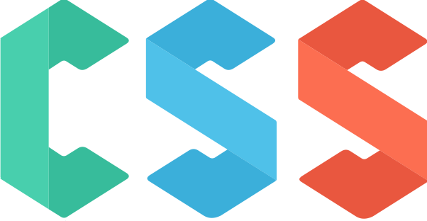
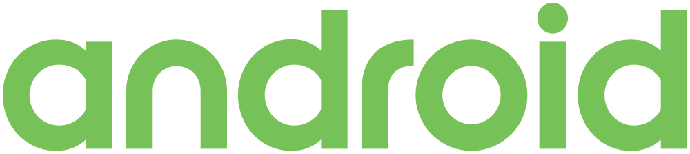
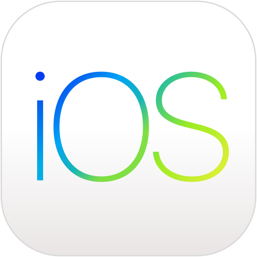
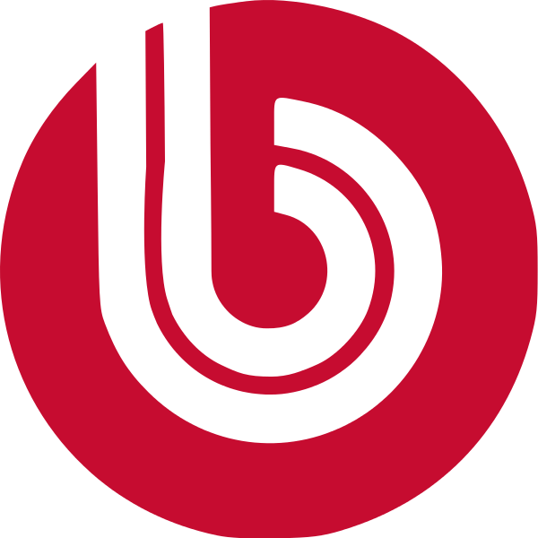
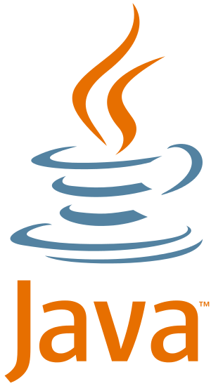
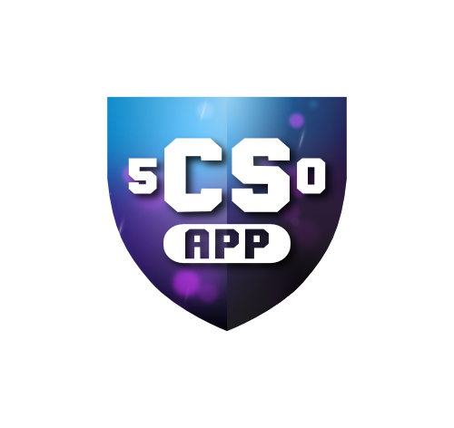

Скретч — визуальная объектно-ориентированная среда программирования для обучения школьников младших и средних классов. Название произошло от слова scratching — техники, используемой хип-хоп-диджеями, которые крутят виниловые пластинки взад-вперёд руками для того, чтобы смешивать музыкальные темы.
Скретч создан как продолжение идей языка Лого и конструктора Лего. Скретч 1 был написан на языке Squeak, Скретч 2 ориентирован на работу онлайн и переписан на Flash/ActiveScript. Скретч разрабатывается небольшой командой программистов для детей в Массачусетском технологическом институте. Текущая версия — 2.0, выпущена 9 мая 2013.
В 2008 году Скретч был портирован для микроконтроллерного модуля Arduino. Проект носит название S4A.
Программы на Скретче состоят из графических блоков, подписи к которым зависят от выбранного для интерфейса языка. Может быть выбран один из 50 языков интерфейса, включая русский. Для подключения интерфейса на новом языке используются стандартные gettext файлы.
Python — высокоуровневый язык программирования общего назначения, ориентированный на повышение производительности разработчика и читаемости кода. Синтаксис ядра Python минималистичен. В то же время стандартная библиотека включает большой объём полезных функций.
Python поддерживает несколько парадигм программирования, в том числе структурное, объектно-ориентированное, функциональное, императивное и аспектно-ориентированное. Основные архитектурные черты — динамическая типизация, автоматическое управление памятью, полная интроспекция, механизм обработки исключений, поддержка многопоточных вычислений и удобные высокоуровневые структуры данных. Код в Python организовывается в функции и классы, которые могут объединяться в модули (они в свою очередь могут быть объединены в пакеты).
Эталонной реализацией Python является интерпретатор CPython, поддерживающий большинство активно используемых платформ. Он распространяется под свободной лицензией Python Software Foundation License, позволяющей использовать его без ограничений в любых приложениях, включая проприетарные. Есть реализации интерпретаторов для JVM (с возможностью компиляции), MSIL (с возможностью компиляции), LLVM и других. Проект PyPy предлагает реализацию Python с использованием JIT-компиляции, которая значительно увеличивает скорость выполнения Python-программ.
Python — активно развивающийся язык программирования, новые версии (с добавлением/изменением языковых свойств) выходят примерно раз в два с половиной года. Вследствие этого и некоторых других причин на Python отсутствуют стандарт ANSI, ISO или другие официальные стандарты, их роль выполняет CPython.
HTML — стандартизированный язык разметки документов во Всемирной паутине. Большинство веб-страниц содержат описание разметки на языке HTML (или XHTML). Язык HTML интерпретируется браузерами; полученный в результате интерпретации форматированный текст отображается на экране монитора компьютера или мобильного устройства.
Язык HTML является приложением SGML (стандартного обобщённого языка разметки) и соответствует международному стандарту ISO 8879.
Язык XHTML является более строгим вариантом HTML, он следует всем ограничениям XML и, фактически, XHTML можно воспринимать как приложение языка XML к области разметки гипертекста.
Во всемирной паутине HTML-страницы, как правило, передаются браузерам от сервера по протоколам HTTP или HTTPS, в виде простого текста или с использованием шифрования.

CSS — формальный язык описания внешнего вида документа, написанного с использованием языка разметки.
Преимущественно используется как средство описания, оформления внешнего вида веб-страниц, написанных с помощью языков разметки HTML и XHTML, но может также применяться к любым XML-документам, например, к SVG или XUL.
JavaScript — прототипно-ориентированный сценарный язык программирования. Является реализацией языка ECMAScript (стандарт ECMA-262).
JavaScript обычно используется как встраиваемый язык для программного доступа к объектам приложений. Наиболее широкое применение находит в браузерах как язык сценариев для придания интерактивности веб-страницам.
Основные архитектурные черты: динамическая типизация, слабая типизация, автоматическое управление памятью, прототипное программирование, функции как объекты первого класса.
На JavaScript оказали влияние многие языки, при разработке была цель сделать язык похожим на Java, но при этом лёгким для использования непрограммистами. Языком JavaScript не владеет какая-либо компания или организация, что отличает его от ряда языков программирования, используемых в веб-разработке.
Название «JavaScript» является зарегистрированным товарным знаком компании Oracle Corporation.

Android — операционная система для смартфонов, интернет-планшетов, электронных книг, цифровых проигрывателей, наручных часов, игровых приставок, нетбуков, смартбуков, очков Google, телевизоров и других устройств. В 2015 году появилась поддержка автомобильных развлекательных систем[4] и бытовых роботов. Основана на ядре Linux и собственной реализации виртуальной машины Java от Google. Изначально разрабатывалась компанией Android, Inc., которую затем купила Google. Впоследствии Google инициировала создание альянса Open Handset Alliance (OHA), который сейчас занимается поддержкой и дальнейшим развитием платформы. Android позволяет создавать Java-приложения, управляющие устройством через разработанные Google библиотеки. Android Native Development Kit позволяет портировать библиотеки и компоненты приложений, написанные на Си и других языках.
В 86 % смартфонов, проданных во втором квартале 2014 года, была установлена операционная система Android. При этом за весь 2014 год было продано более 1 миллиарда Android-устройств.

iOS — операционная система для смартфонов, электронных планшетов и носимых проигрывателей, разрабатываемая и выпускаемая американской компанией Apple. Была выпущена в 2007 году; первоначально — для iPhone и iPod touch, позже — для таких устройств, как iPad и Apple TV. В отличие от Windows Phone (Microsoft) и Android (Google), выпускается только для устройств, производимых фирмой Apple.
В iOS используется ядро XNU, основанное на микроядре Mach и содержащее программный код, разработанный компанией Apple, а также код из ОС NeXTSTEP и FreeBSD. Ядро iOS почти идентично ядру настольной операционной системы Apple macOS (ранее называвшейся OS X). Начиная с самой первой версии, iOS работает только на планшетных компьютерах и смартфонах с процессорами архитектуры ARM.
Форма регистрации
Ruby — динамический, рефлективный, интерпретируемый высокоуровневый язык программирования. Язык обладает независимой от операционной системы реализацией многопоточности, строгой динамической типизацией, сборщиком мусора и многими другими возможностями. По особенностям синтаксиса он близок к языкам Perl и Eiffel, по объектно-ориентированному подходу — к Smalltalk. Также некоторые черты языка взяты из Python, Lisp, Dylan и Клу.
Кроссплатформенная реализация интерпретатора языка является полностью свободной.
C# (произносится си шарп) — объектно-ориентированный язык программирования. Разработан в 1998—2001 годах группой инженеров под руководством Андерса Хейлсберга в компании Microsoft как язык разработки приложений для платформы Microsoft .NET Framework и впоследствии был стандартизирован как ECMA-334 и ISO/IEC 23270.
C# относится к семье языков с C-подобным синтаксисом, из них его синтаксис наиболее близок к C++ и Java. Язык имеет статическую типизацию, поддерживает полиморфизм, перегрузку операторов (в том числе операторов явного и неявного приведения типа), делегаты, атрибуты, события, свойства, обобщённые типы и методы, итераторы, анонимные функции с поддержкой замыканий, LINQ, исключения, комментарии в формате XML.
Переняв многое от своих предшественников — языков C++, Pascal, Модула, Smalltalk и, в особенности, Java — С#, опираясь на практику их использования, исключает некоторые модели, зарекомендовавшие себя как проблематичные при разработке программных систем, например, C# в отличие от C++ не поддерживает множественное наследование классов (между тем допускается множественное наследование интерфейсов).
C++ — компилируемый, статически типизированный язык программирования общего назначения.
Поддерживает такие парадигмы программирования, как процедурное программирование, объектно-ориентированное программирование, обобщённое программирование, обеспечивает модульность, раздельную компиляцию, обработку исключений, абстракцию данных, объявление типов (классов) объектов, виртуальные функции. Стандартная библиотека включает, в том числе, общеупотребительные контейнеры и алгоритмы. C++ сочетает свойства как высокоуровневых, так и низкоуровневых языков. В сравнении с его предшественником — языком C, — наибольшее внимание уделено поддержке объектно-ориентированного и обобщённого программирования.
C++ широко используется для разработки программного обеспечения, являясь одним из самых распространенных, наиболее часто используемых языков программирования. Область его применения включает создание операционных систем, разнообразных прикладных программ, драйверов устройств, приложений для встраиваемых систем, высокопроизводительных серверов, а также развлекательных приложений (игр). Существует множество реализаций языка C++, как бесплатных, так и коммерческих и для различных платформ. Например, на платформе x86 это GCC, Visual C++, Intel C++ Compiler, Embarcadero (Borland) C++ Builder и другие. C++ оказал огромное влияние на другие языки программирования, в первую очередь на Java и C#.
Синтаксис C++ это дальнейшее развитие языка C. Одним из принципов разработки было сохранение совместимости с C. Тем не менее, C++ не является в строгом смысле надмножеством C; множество программ, которые могут одинаково успешно транслироваться как компиляторами C, так и компиляторами C++, довольно велико, но не включает все возможные программы на C.

1С-Битрикс.
Для хранения данных сайта используется файловая система сервера и реляционная СУБД. Поддерживаются следующие СУБД: MySQL, Oracle, MS SQL. Продукт работает на Microsoft Windows и UNIX‐подобных платформах, включая Linux.
Количество модулей в устанавливаемой системе зависит от редакции продукта.
.NET Forge CMS
Для хранения данных сайта используется файловая система сервера и реляционная СУБД MS SQL. Продукт работает на Microsoft Windows.
Количество модулей в устанавливаемой системе зависит от редакции продукта.
Существует бесплатная редакция продукта.
В настоящий момент не развивается (последний релиз от 15.06.2012).
Форма регистрации
PHP — скриптовый язык общего назначения, интенсивно применяемый для разработки веб-приложений. В настоящее время поддерживается подавляющим большинством хостинг-провайдеров и является одним из лидеров среди языков, применяющихся для создания динамических веб-сайтов.
Язык и его интерпретатор (Zend Engine) разрабатываются группой энтузиастов в рамках проекта с открытым кодом. Проект распространяется под собственной лицензией, несовместимой с GNU GPL.
MySQL — свободная реляционная система управления базами данных. Разработку и поддержку MySQL осуществляет корпорация Oracle, получившая права на торговую марку вместе с поглощённой Sun Microsystems, которая ранее приобрела шведскую компанию MySQL AB. Продукт распространяется как под GNU General Public License, так и под собственной коммерческой лицензией. Помимо этого, разработчики создают функциональность по заказу лицензионных пользователей. Именно благодаря такому заказу почти в самых ранних версиях появился механизм репликации.
MySQL является решением для малых и средних приложений. Входит в состав серверов WAMP, AppServ, LAMP и в портативные сборки серверов Денвер, XAMPP, VertrigoServ. Обычно MySQL используется в качестве сервера, к которому обращаются локальные или удалённые клиенты, однако в дистрибутив входит библиотека внутреннего сервера, позволяющая включать MySQL в автономные программы.
Гибкость СУБД MySQL обеспечивается поддержкой большого количества типов таблиц: пользователи могут выбрать как таблицы типа MyISAM, поддерживающие полнотекстовый поиск, так и таблицы InnoDB, поддерживающие транзакции на уровне отдельных записей. Более того, СУБД MySQL поставляется со специальным типом таблиц EXAMPLE, демонстрирующим принципы создания новых типов таблиц. Благодаря открытой архитектуре и GPL-лицензированию, в СУБД MySQL постоянно появляются новые типы таблиц.
26 февраля 2008 года Sun Microsystems приобрела MySQL AB за 1 млрд долларов, 27 января 2010 года Oracle приобрела Sun Microsystems за 7,4 млрд долларов и включила MySQL в свою линейку СУБД.
Сообществом разработчиков MySQL созданы различные ответвления кода, такие как Drizzle (англ.), OurDelta, Percona Server и MariaDB. Все эти ответвления уже существовали на момент поглощения компании Sun корпорацией Oracle.

Java — строго типизированный объектно-ориентированный язык программирования, разработанный компанией Sun Microsystems (в последующем приобретённой компанией Oracle). Приложения Java обычно транслируются в специальный байт-код, поэтому они могут работать на любой компьютерной архитектуре, с помощью виртуальной Java-машины. Дата официального выпуска — 23 мая 1995 года.
Linux — семейство Unix-подобных операционных систем операционных систем на базе ядра Linux, включающих тот или иной набор утилит и программ проекта GNU, и, возможно, другие компоненты. Как и ядро Linux, системы на его основе как правило создаются и распространяются в соответствии с моделью разработки свободного и открытого программного обеспечения. Linux-системы распространяются в основном бесплатно в виде различных дистрибутивов — в форме, готовой для установки и удобной для сопровождения и обновлений, — и имеющих свой набор системных и прикладных компонентов, как свободных, так возможно и собственнических.
Появившись как решения вокруг созданного в начале 1990-х годов ядра, уже с начала 2000-х годов системы Linux являются основными для суперкомпьютеров и серверов, расширяется применение их для встраиваемых систем и мобильных устройств, некоторое распространение системы получили и для персональных компьютеров.
За счёт использования свободного программного обеспечения и привлечения волонтёров каждая из систем Linux обладает значительными программными возможностями, трудно реализуемыми в прочих моделях разработки: например, в 2008 году расчёты показывали, что для того, чтобы «с нуля» разработать систему, аналогичную Fedora 9, потребовалось бы затратить $10,8 млрд, а совокупная себестоимость только ядра Linux оценивалась в сумму более $1,4 млрд, притом только за 2008 год она увеличилась увеличилась на $315 млн, совокупный труд оценён в размере 73 тыс. человеко-лет.
Традиционно системами Linux считаются только те, которые включают в качестве компонентов основные программы проекта GNU, такие как bash, gcc, glibc, coreutils, GNOME и ряд других, в связи с чем часто всё семейство иногда идентифицируется как GNU/Linux, притом существует спор об именовании GNU/Linux. Существует проект стандартизации внутренней структуры Linux-систем — Linux Standard Base, часть из документов которого зарегистрировано в качестве стандартов ISO; но далеко не все системы сертифицируются по нему, и в целом для Linux-систем не существует какой-либо общепризнанной стандартной комплектации или формальных условий включения в семейство. Однако есть ряд систем на базе ядра Linux, но не имеющих в основе зависимости от программ GNU, которые к Linux-семейству традиционно не относят, в частности таковы мобильные системы Android и FirefoxOS.
Пингвин Tux
Официальным логотипом и талисманом Linux является пингвин Tux, созданный в 1996 году Ларри Юингом. Торговая марка «Linux» принадлежит создателю и основному разработчику ядра Линусу Торвальдсу. При этом проект Linux в широком смысле не принадлежит какой-либо организации или частному лицу, вклад в его развитие и распространение осуществляют тысячи независимых разработчиков и компаний, одним из инструментов взаимодействия которых являются группы пользователей Linux. Существует ряд некоммерческих объединений, ставящих основной целью развитие и продвижение Linux, наиболее крупное и влиятельное из них — основанный в 2007 году The Linux Foundation. Существует значительный рынок коммерческой технической поддержки Linux-систем, на котором с долей свыше 70 % (2017) доминирует корпорация Red Hat.

CS50 (Computer Science 50) — вводный онлайн курс по компьютерным технологиям из Гарварда и, начиная с 2015 года, Йельского университета. Материал курса доступен бесплатно, за отдельную плату возможно получить различные сертификаты. На данный момент переводом лекций CS50 на русский язык занимается студия переводов и озвучивания Vert Dider по заказу JavaRush.